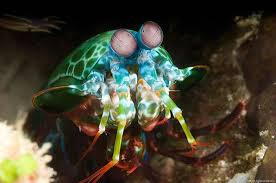

Fatos interessantes sobre o Stomatopoda:
Características:
- Nome científico : Odontodactylus scyllarus (Ou para os mais chegados, Stomato)
- Características distintivas : olhos montados em hastes móveis que podem se mover
independentemente um do outro. - Reino : Animalia
- Filo : Arthropoda
- Subfilo : Crustáceos
- Classe : Malacostraca
- Ordem : Stomatopoda
- Tamanho médio : 10 centímetros (3,9 pol.)
- Dieta : carnívora
- Vida útil : 20 anos
- Curiosidade : um golpe de uma garra de camarão mantis é tão forte que pode quebrar o vidro do aquário.
Visão
Os estomatópodes têm a visão mais complexa do reino animal, superando até a das borboletas . O camarão mantis tem olhos compostos montados em talos e pode girá-los independentemente um do outro para examinar seus arredores. Enquanto os humanos têm três tipos de fotorreceptores, os olhos do camarão mantis têm entre 12 e 16 tipos de células fotorreceptoras. Algumas espécies podem até ajustar a sensibilidade de sua visão de cores.
Comportamento

Os camarões louva-a-deus são altamente inteligentes. Eles reconhecem e se lembram de outras pessoas pela visão e pelo olfato, e demonstram habilidade para aprender. Os animais têm um comportamento social complexo, que inclui lutas ritualizadas e atividades coordenadas entre membros de um par monogâmico. Eles usam padrões fluorescentes para sinalizar uns aos outros e possivelmente a outras espécies.